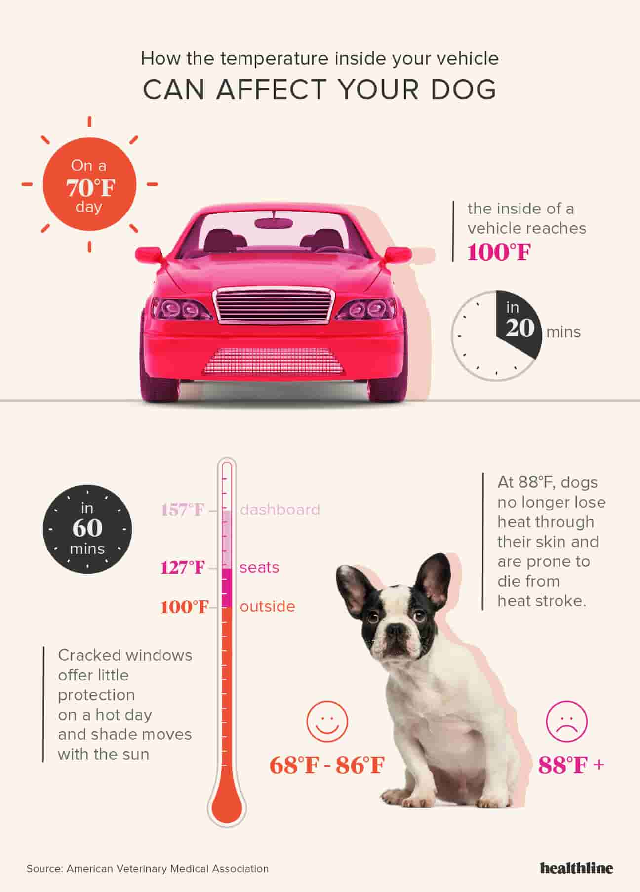

here is a reminder about music fest polices including some new ones to ensure you have a great time with minimal risk
in case an fire appears:
musicfest will have on hand hoses in a central location that we can get to in an hurry if need be. Music fest also provides fire buckets at the 3 central water stations in public camping as well as buckets located at the two water stations in the volunteer campground, these are clearly marked and will be full do not remove these buckets unless there's an fire. in case of an emergency please remain calm and make your way to the track below the Comox Valley Sports Centre on Vanier Drive. location of the track, is up on the trail at the front of parking, or located just below.
heregetting here-shuttle information
first student shuttle
first student shuttle is a bus that runs all weekend (july 14-16) from:
comox presbyterian church 725 aspen rd comox, to bc driftwood mall, to the site.
| the shuttle runs as follows: | ||
|---|---|---|
| friday | saturday | sunday |
| july 14th | july 15th | july 16th |
| 2:30 pm - 1 am | 8:30 am - 1 am | 8:30 am - 1 am |
| *if the 1 am bus is full they will return past the time listed to get the ramaining people. | ||
bus fee's and vanier parking:
-
bus fees:
- bus fees are 5$ per/person -per ride kids under 12 are free
-
vanier parking: july 14, 15 & 16
- price 5$ (privileges): you only need to pay ounce for parking no matter if you leave and come back, however this does not apply if we are out of room.) the comox valley sports and aquatic centre has limted free parking avalible, however on saturday from 6:00 am till 1:00 pm there is no parking at the centre due to the farmers market
-
vanier parking rules:
- vehicles will recive a daily parking pass to put on thier windshield
- cars must park in a designated parking space
- no overnight parking contact an parking attendant if you will be late
- no overnight camping when using our parking
- use of grass parking areas may be limted
vancouver island musicfest is not resposible for any vehicles that have been towed.
your festival hosts

our friendly host volunteers rove the audience areas and have the full scoop on audience etiquette, festival seating polices and how to get where. these folks work with you to ensure everyone has an good time this festival. so please respect them as they work hard as our front line volunteers! any abusive treatment of our volunteers will not be tolerated at musicfest!
| camping box office | wendesday | thursday | friday |
| july 12th | july 13th | july 14th | |
| 3:00 pm - 9 pm | 10:00 am - 9 pm | 10:00 am - 9 pm | |
| maingate box office | friday | saturday | sunday |
|---|---|---|---|
| july 14th | july 15th | july 16th | |
| 3:00 pm - 11 pm | 9:00 am - 11 pm | 9:00 am - 11 pm |
daytime seating in front of the concert bowl stage

tarditionally at canadian folk festivals at candian folk fesitvals, pepole whould rush in and 'claim thier turf' for the evening mainstage performances this way of doing things dosen't work at our festival because we have daytime performnces on our main (concert bowl stage), to pervent an sea of empery tarps near the front of the stage we have created an area in front of the concert bowl stage where you are not allowed to leave anything unless you are with it that way the current audience will be able to sit and enjoy the show.
however be warned, if you leave blankets/tarps or chairs in this transtional zone, they will be folded up and set aside in order to make room for the current audience members. please see the concert bowl map for the location of the area, look for markers on the field. or ask one of our festival hosts to find where your objects are located.
boogie zone and evening dance times
dancing is encouraged at our festival, but we also want to keep an clear view for our seated audience members. we want to make sure sure our festivals work for everyone, with this in mind, a larger boogie zone has been created on the sides of the concert bowl stage. clar markers have been installed on those areas, dancing directly in front of the stage is not permitted for most of the show until we hit the evening when we have dance-oriented bands on stage.
each night, the markers will come down and the front of our concert bowl stage will become an dance floor at the specific times listed to the left updated when our line-up is complete.
please respect each other and these guidelines as we try to make our festival work for everyone. if you had saved yourself an seat at the front of the stage and don't want to dance, then please move back into the areas where pepole are still sitting.
disabled acess stage viewing areas these areas are clearly marked, designated areas at the stage, including an acesible platform, care attendants or family may sit in these designated areas if space allows, however please be respectful and move aside if someone else with a disability arrives and the space is full. our hosts may mention to you more then ounce that family or attendants may have to move aside please be respectful as our as our volunteers are just trying to do thier jobs and a shift change may have happened. ear protection while seated at the concert bowl, you may be sitting in the direct path of our sub-speakers although we attempt to make our volume levels effective to everyone folks with sensitive hearing may not be comfortable, we have ear protection avalible at the hub if needed. parents, please try to keep your babies out of the direct range of our sound systems at our stages. we highly reccomend babies wearing hearing protection at musicfest or any other festivals. which is avalible to purchase at the hub or & cd/merch tent effective to everyone folks with sensitive hearing may not be comfortable, we have ear protection avalible at the hub if needed. parents, please try to keep your babies out of the direct range of our sound systems at our stages. we highly reccomend babies wearing hearing protection at musicfest or any other festivals. which is avalible to purchase at the hub or & cd/merch tent
no pets allowed:
as much as we love pets, we cannot have them on site at musicfest, please leave your pets at home or make arrangements for them.
any pets left in vehicles around the festival may be resuced and taken to the S.P.C.A.
the only animals permitted on site are registered service dogs. they must be wearing a working vest.
beer gardens no more!
we have transitioned to an open license capacity. please help us by respecting the signage around the site where alcohol is not permitted. you are welcome to travel to multiple stages with your beverage however there are still a few no drink zones on the site. alcohol will not be permitted to go down the woodland path to the woodland stage or the crossroads stage. no alcoholic beverages will be permitted in or out of the festival gates, public camping or volunteer camping. please see the site map to locate our 3 beverage serving stations.
now for the rules:
- 2 peices of valid id will be required to purchase beer tickets & to pick up drinks from the pouring stations.
- only alcohol purchased from our liquor service stations is permitted. absolutely no outside alcohol permitted.
- when finshed with an can, please depoist all cans into the appropriate refundable receptacle/appropriate recycling.
- minors caught with alcohol will be brought to the RCMP and removed from the site.
- any adults caught contributing alcohol to a minor will be taken to the rcmp and removed from the site.
please enjoy the freedom this creates and help us keep everyone happy and safe